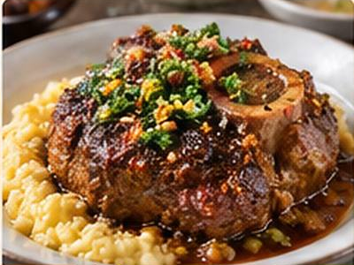

← Back to all recipes
BEEF · ITALIAN
Osso Buco with Red Wine
Slow-braised veal shanks in red wine, tomato, aromatics, and herbs, finished with gremolata.
3 hrServes 4
BRAISING TECHNIQUE
Meat tip: Brown the shanks deeply, then braise gently with enough liquid to surround—not drown—the meat until collagen turns silky.
See the Meat Cooking Guide →
Ingredients
- 4 veal shanks
- Salt, pepper, and flour
- 2 tbsp olive oil
- 1 onion, 1 carrot, 1 celery stalk, diced
- 4 garlic cloves
- 1 cup red wine
- 1 can (14 oz) tomatoes
- 2 cups beef stock
- Rosemary and thyme
- Parsley, lemon zest, and garlic for gremolata
Preparation
- Season and flour shanks; brown well and remove.
- Cook vegetables and garlic. Deglaze with red wine and reduce by half.
- Add tomatoes, stock, herbs, and veal. Cover and braise at 325°F for 2–2½ hours.
- Serve with reduced sauce and gremolata.